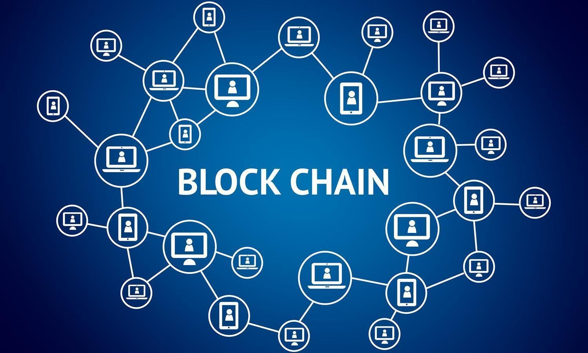

Технология Блокчейн:
От основ к революции в цифровом мире
Узнайте, как распределенный реестр меняет наше представление о доверии, безопасности и данных.
Узнать большеТак как же это работает?
Весь процесс работы блокчейна можно условно разделить на несколько ключевых этапов. Это похоже на создание неразрывной цифровой цепи.
- Пользователь создает и отправляет транзакцию в сеть.
- Транзакция попадает в общий "пул" и ожидает подтверждения.
- Майнеры (или валидаторы) отбирают транзакции для формирования нового блока.
- Готовый блок криптографически связывается с предыдущим и добавляется в цепь.
- После этого транзакция считается выполненной и необратимой.

Ключевые термины, которые стоит знать
🔗Блок
Структура данных, которая хранит в себе пачку транзакций, временную метку и ссылку (хеш) на предыдущий блок.
🔑Хеш
Уникальная строка фиксированной длины, своего рода "цифровой отпечаток" данных блока, обеспечивающий целостность.
⛏️Майнинг
Процесс "добычи" новых блоков путем решения сложных вычислительных задач. За успех майнеры получают вознаграждение.
📜Смарт-контракт
Программа, которая хранится в блокчейне и автоматически выполняет заложенные в нее условия договора.
Фундаментальная проблема с традиционной валютой — это всё доверие, которое необходимо для её работы. — Сатоши Накамото